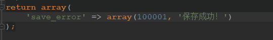
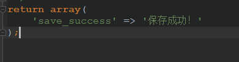
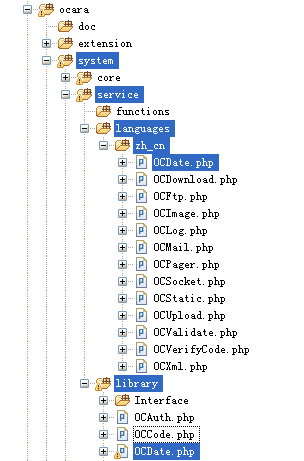

4.3 多语言功能
本框架支持多语言开发，除了Web应用的一般多语言功能，对于框架的扩展插件也可以进行多语言配置。Web应用的多语言
1、语言配置介绍 语言配置与系统配置类似，也分为控制层配置和模型配置2种，每层都有全局和模块配置。使用方式也类似。 不同在于，要多一层语言名称目录，默认zh_cn。 （1）控制层语言配置 全局语言配置：application/lang/语言名，比如默认的是application/lang/zh_cn以下类似。 模块语言配置：application/modules/模块名/private/lang/语言名 （2）模型层语言配置 全局语言配置：application/lang/语言名/database 模块语言配置：application/modules/模块名/private/lang/语言名/database 除了上述几种，框架本身也有其语言配置文件（ocara/system/data/languages/zh_cn.php）。 2、语言配置覆盖顺序 语言配置是从下到上是覆盖的。 覆盖顺序如下：模块语言配置会覆盖全局语言配置，而全局语言配置会覆盖框架底层的语言配置。 3、语言配置格式 （1）错误提示 使用数组：array(错误代码，错误文本)  （2）显示文本  4、语言配置的使用 获取语言配置要使用ocLang()函数，上例代码可看到，该函数的具体使用方式请参见函数智能/系统应用中的ocLang()函数的使用。插件的多语言配置
1、插件配置介绍 主要是作为扩展插件中错误提示或显示文本。 比如框架的插件目录同级有一个Languages目录，其中对应了同名类名的配置文件。  2、插件中配置的使用 （1）显示错误提示 作为错误提示时，要在插件代码中使用error对象的show()方法。 比如上例中，我们可以在Sphinx插件中某处抛出错误提示：/** * Sphinx组件 */ use Ocara\Core\ServiceBase; class MySphinx extends ServiceBase { public function __construct() { $path = ocPath('support', 'api/sphinxapi.php'); if (!ocFileExists($path)) { /** * 这里自动翻译not_exists_sphinx_service语言配置 * 会显示成： */ self::showError('not_exists_sphinx_service'); } //... ... 其他代码 } public function query($keyword) { if (empty($keyword)) { self::showError('not_exists_keyword'); } //... ... 其他代码 } }（2）只显示文本 作为显示文本时，使用getMessage()方法。 比如上例，可以如下使用：/** * Sphinx组件 */ use Ocara\Core\ServiceBase; class MySphinx extends ServiceBase { public function __construct() { $message = self::getMessage('not_exists_sphinx_service'); echo $message; //输出Sphinx服务不存在 $message = self::getMessage('not_exists_keyword'); echo $message; //关键字为空或不存在 //... ... 其他代码 } }